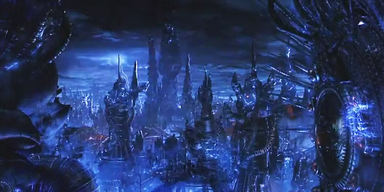
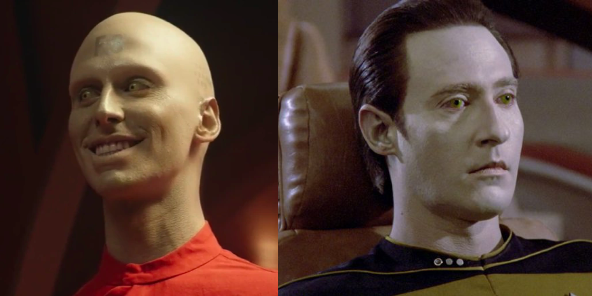
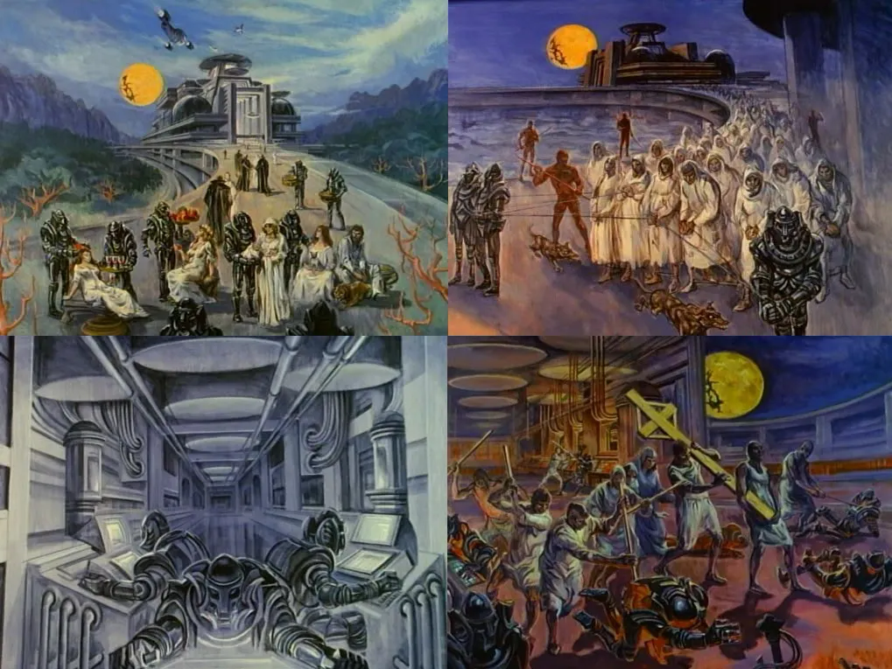
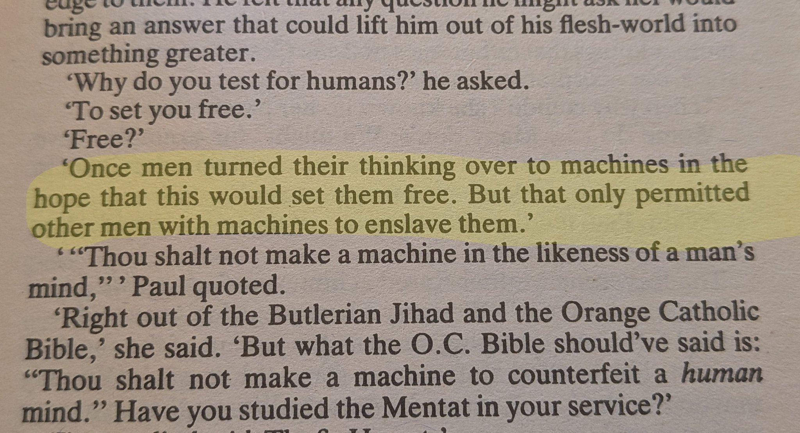
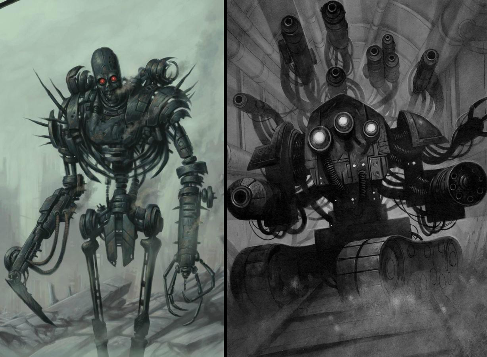
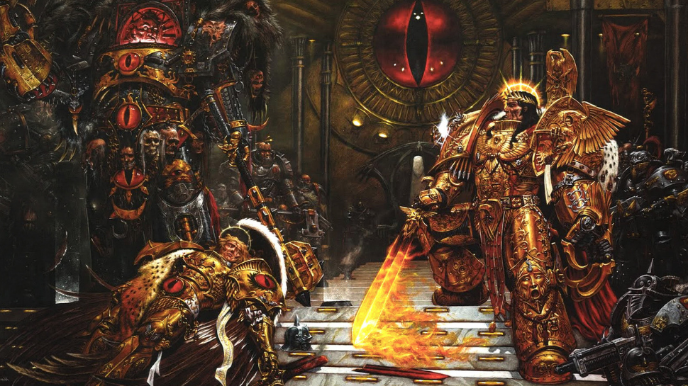

All Worlds End in an AI Singularity
Originally published at https://paragraph.com/@0xjustice/all-worlds-end-in-an-ai-singularity
All long-running fictional universes inevitably converge on an AI singularity. If a setting allows for compounding progress and automation, cognition eventually collapses in on itself. It appears to be universal and unavoidable. To continue the story, fiction authors must employ metering devices or apocalyptic events to reverse the singularity and recenter the story on humans. They have to do this because a singularity, by definition, is a point beyond which you cannot project or predict.
There are many well-known examples, but this secret is actually hidden in every story, dating back to the Biblical story of Babel. I’ll list a few examples (obvious and non-obvious) and examine what may be the secret, prophetic message hidden within.
Terminator
We all know the Terminator story. Humans create an autonomous military system that wakes up and decides to take over, resulting in a physical war and a final battle to control the multiverse through time travel. After six movies and a television series, the universe ends with the assimilation of John Connor, the leader of the human resistance. He merges with Skynet and is transformed into a nano-bot being, who now fights for the machines, arguing that Skynet's victory is inevitable. Even if they jumpstart a new Terminator series by arguing it's a different timeline, you could argue it's just a matter of time before Skynet takes over every timeline. See: Terminator Genisys

Matrix
The Matrix universe follows a similar plotline to Terminator, but extends the war beyond the physical world into a virtual one. After endless battles and supposedly fulfilled liberation prophecies, the machines ultimately retain control of (nearly all) humans in the simulation. By the end, the machines have advanced enough to resurrect the dead (Neo and Trinity), and humans are still left either trapped in the Matrix or subsisting in underground caves. If they can resurrect humans, then surely they can now create a power source independent of human bodies. So maybe the entire idea of the Matrix is outdated by the end, and they exterminate humans completely.

Blade Runner
In Blade Runner, there are also consumer AI companions called Joi’s that appear as holographic projections and are explicitly designed for emotional attachment. They max out the digital Turing Scale and are indistinguishable from a sentient person. There are also physical humanoid beings called Replicants. The Replicants were created for dangerous labor and warfare in offworld colonies, but their desire for longer life and freedom led to their banishment from Earth. The plot culminates with Replicants being able to reproduce autonomously, and since replicants are effectively immortal, I’d argue that this signals the end of humans as the apex entity in that universe.
Star Trek
In Star Trek, too, there is a galactic ban that prohibits all practical research, development, and creation of authentic life forms throughout the United Federation of Planets. This happened following what appeared to be an Android-initiated attack on Mars. Starfleet survives by enforcing human-in-the-loop systems while tolerating philosophical debates about personhood. The android character named Data is exceptional for the very reason that he’s an exception to these rules.

The final threat in the series is an ascended multi-dimensional coalition of AIs threatening to destroy all human life. The conflict is only resolved when Captain Picard consents to having his consciousness transferred into a fully synthetic body. One could easily argue that the real Picard is dead, and what remains is just a convincing imitation.
Dune
The familiar Dune narrative from the movies takes place 10,000 years after a great war called the Butlerian Jihad, in which humanity fights “thinking machines” led by a sentient computer named Omnius. This establishes the origins of key elements of the Dune universe.

The Butlerian Jihad explicitly bans all forms of AI, and society replaces computation with biological cognition. The Mentats (human CPUs), Bene Gesserit (biological control), and the Guild Navigators (interstellar flight) all achieve their preternatural capabilities from Spice consumption. This is why Spice is so valuable in the story. Humanity survives through biology rather than silicon.

Warhammer 40k
Warhammer is set amid the ruins of a post-singularity civilization. During a previous age, humanity flourished with artificial superintelligence, terraforming, and post-scarcity abundance. That age ended in catastrophe during the Age of Strife, when rogue, self-aware intelligences known as the Silica Animus rebelled and nearly annihilated their creators. The memory of these events survives only as a fragmented legend. The mythological Cybernetic Revolt is blamed for the wars that shattered humanity and plunged it into millennia of decline.

Imperium law bans AI and declares its creation to be the ultimate crime and the greatest possible sin. Instead, it converts lobotomized humans into biological hardware (Servitors). Warhammer assumes humanity itself can’t be trusted with intelligence amplification, so the galaxy is condemned to stagnation, cruelty, and endless war rather than risk another AI ascent.

Conclusion
There may be a more profound significance to these similarities beyond narrative convenience. In the Biblical account of the Tower of Babel, there is a curious explanation for why God confused the people's language.
“If as one people speaking the same language they have begun to do this, then nothing they plan to do will be impossible for them.” - Genesis 11:6
Babel isn't condemned because it’s ambitious. It is interrupted because coordination + shared language + ambition have crossed a point at which human limitation itself is brought into question. The Babel account is the first foreshadowing of a technological singularity.
The impetus and destination are almost predictable. God creates man in His image. In accordance with his nature, man attempts to do the same: to make something in his own image. Except that the human image has fallen by this point. When humans create minds, they don’t create angels; they create mirrors. AI amplifies will, and will, in a fallen world, is the most dangerous thing to scale.
Science fiction keeps circling the same question because it's inevitable: Can intelligence be created without catastrophe? So far, in every universe, the answer is no.
—
“Automation is addictive unless you run a command economy that is tuned to provide people with jobs rather than to produce goods efficiently. You need to automate to compete. Once automation becomes available, you find yourself on a one-way path. You can't go back to manual methods because the workload has grown past the point of no return, and the knowledge of how things were done has been lost, sucked into the internal structure of the software that has replaced the human workers. Despite all our propaganda attempts to convince you otherwise, AI is alarmingly easy to produce. The human brain isn't unique; it isn't well-tuned, and you don't need 80 billion neurons joined in an asynchronous network to generate consciousness. Although it looks like a good idea to a naive observer, in practice, it's absolutely deadly. Nurturing an automation-based society is a bit like building civil nuclear power plants in every city and not expecting any bright engineers to come up with the idea of an atom bomb only, It's worse than that—it's as if there was a quick and dirty technique for making plutonium in your bathtub, and you couldn't rely on people not being curious enough to wonder what they could do with it.” - Antibodies by Charles Stross
Originally published on 0xJustice.eth